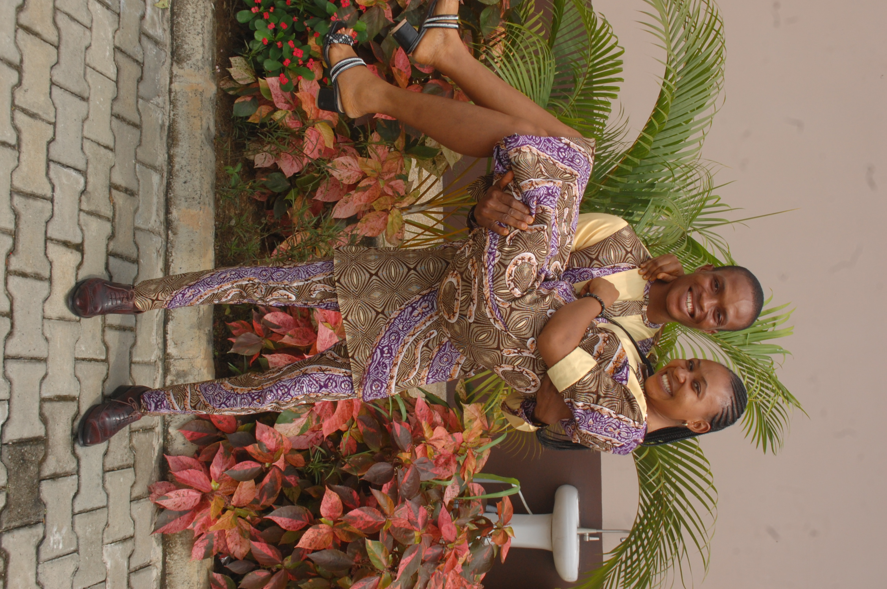

About Me
 My name is Godwin Akpan Essien. I am from Nigeria. I am currently pursuing my degree online at BYU-Idaho, and my major is software development. I am married to the most beuatiful woman in my life and together we have an angelic daughter who means the world to us. I love coding, music and learning new things.
Akwa Ibom, Nigeria
Nigeria is known as the giant of Africa because of it's wealth in culture, trading and most importantly, its population in the continent. It is a multinational state inhabited by more than 250 ethnic groups speaking 500 distinct languages, all identifying with a wide variety of cultures.